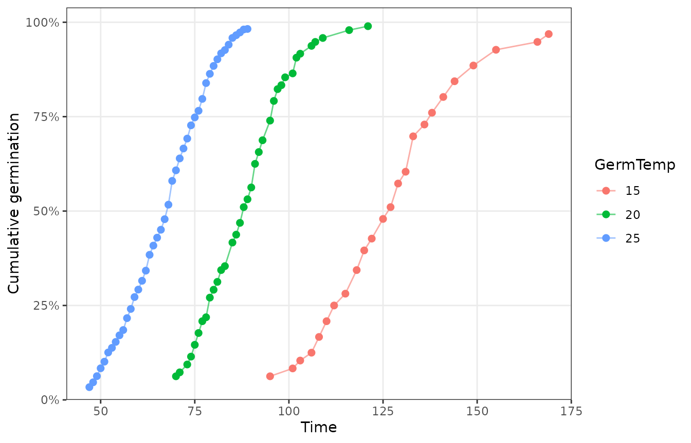
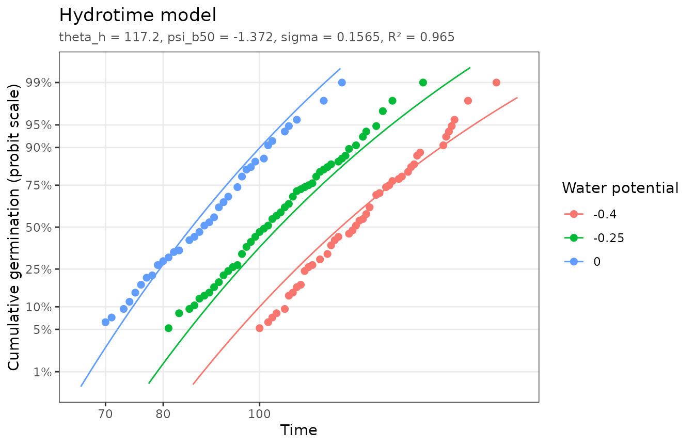
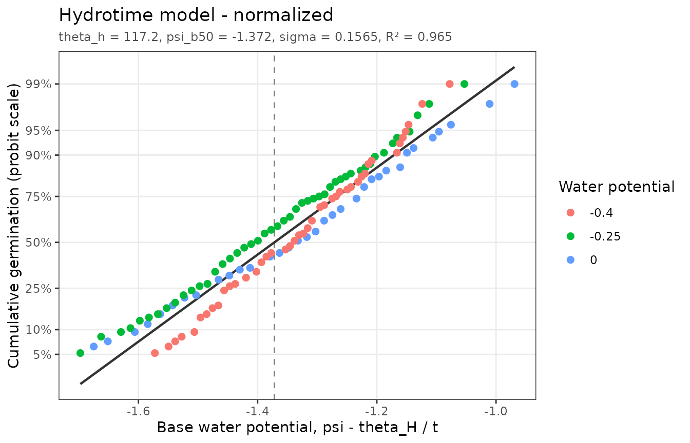

Population-based threshold (PBT) models describe how a population of seeds responds to a factor such as temperature, water potential, a hormone, or aging. Each seed has its own threshold for the factor, and thresholds vary normally across the population. When the factor exceeds a seed’s threshold, that seed germinates at a rate proportional to the amount by which the threshold is exceeded. Fitting a PBT model to germination time courses collected at several factor levels estimates the threshold distribution (its median and standard deviation) and a time constant for the response, from which germination under any other condition can be predicted (Bradford and Bello, 2022).
pbtm fits these models with nonlinear least squares and plots the results. This vignette covers data preparation and the tools shared by every model; each model has its own vignette:
-
vignette("thermal-time"): base temperature and thermal time. -
vignette("hydrotime"): hydrotime and hydrothermal time. -
vignette("priming"): hydropriming and hydrothermal priming. -
vignette("aging"): seed aging. -
vignette("promoters-inhibitors"): hormone dose responses. -
vignette("subpopulations"): seed lots made of several subpopulations.
Preparing data
pbtm expects one row per observation of a germination time course,
with the cumulative elapsed time (CumTime) and the
cumulative fraction of seeds germinated by that time
(CumFraction, from 0 to 1). Treatment columns repeat the
treatment’s value on every row of its time course.
pbtm_columns lists the template columns, their valid
ranges, and which models use them:
pbtm_columns[, c("Column", "Description", "Min", "Max")]
#> # A tibble: 12 × 4
#> Column Description Min Max
#> <chr> <chr> <dbl> <dbl>
#> 1 TrtID Treatment ID NA NA
#> 2 TrtDesc Treatment description NA NA
#> 3 GermTemp Germination temperature 0 100
#> 4 GermWP Germination water potential NA 0
#> 5 PrimingTemp Priming temperature 0 100
#> 6 PrimingWP Priming water potential NA 0
#> 7 PrimingDuration Priming duration 0 NA
#> 8 AgingTime Aging time 0 NA
#> 9 GermPromoterDosage Germination promoter dosage 0 NA
#> 10 GermInhibitorDosage Germination inhibitor dosage 0 NA
#> 11 CumTime Cumulative time 0 NA
#> 12 CumFraction Cumulative germination fraction 0 1TrtID identifies each time course and
TrtDesc describes it. Every model needs
CumTime and CumFraction plus its own treatment
columns, which pbtm_models() lists:
pbtm_models()[, c("model", "label", "factors", "params")]
#> # A tibble: 8 × 4
#> model label factors params
#> <chr> <chr> <named list> <named list>
#> 1 thermal_time Thermal time <chr [1]> <chr [3]>
#> 2 hydrotime Hydrotime <chr [1]> <chr [3]>
#> 3 hydrothermal_time Hydrothermal time <chr [2]> <chr [4]>
#> 4 hydropriming Hydropriming <chr [2]> <chr [3]>
#> 5 hydrothermal_priming Hydrothermal priming <chr [3]> <chr [4]>
#> 6 aging Aging <chr [1]> <chr [3]>
#> 7 promoter Promoter <chr [1]> <chr [3]>
#> 8 inhibitor Inhibitor <chr [1]> <chr [3]>The package includes an example dataset for each model (see
?pbtm_datasets):
head(germination_data)
#> # A tibble: 6 × 5
#> TrtID TrtDesc GermTemp CumTime CumFraction
#> <dbl> <chr> <dbl> <dbl> <dbl>
#> 1 1 Tomato-15C-Water 15 95 0.0625
#> 2 1 Tomato-15C-Water 15 101 0.0833
#> 3 1 Tomato-15C-Water 15 103 0.104
#> 4 1 Tomato-15C-Water 15 106 0.125
#> 5 1 Tomato-15C-Water 15 108 0.167
#> 6 1 Tomato-15C-Water 15 110 0.208If your data are raw counts, calc_cum_frac() converts
cumulative counts of germinated seeds into CumFraction.
validate_germ_data() checks column types and ranges, and
optionally that a model’s columns are present:
validate_germ_data(hydrotime_data, "hydrotime")Data with different column names can be used without renaming them by
passing a cols mapping from template names to your names to
validate_germ_data() or any fitting function:
my_data <- dplyr::rename(thermal_time_data, temp = GermTemp, hours = CumTime)
fit <- fit_thermal_time(my_data, cols = c(GermTemp = "temp", CumTime = "hours"))Exploring germination time courses
plot_germ_data() plots the raw time courses:
plot_germ_data(germination_data, color = "GermTemp")
germ_speed() interpolates the time for each treatment to
reach given germination fractions and the corresponding germination rate
(GR = 1 / Time). The 16% and 84% fractions are one standard
deviation either side of the median:
germ_speed(germination_data, fractions = c(0.1, 0.16, 0.5, 0.84, 0.9))
#> # A tibble: 15 × 4
#> TrtID Fraction Time GR
#> <dbl> <dbl> <dbl> <dbl>
#> 1 1 0.1 103. 0.00975
#> 2 1 0.16 108. 0.00929
#> 3 1 0.5 126. 0.00792
#> 4 1 0.84 144. 0.00696
#> 5 1 0.9 151. 0.00662
#> 6 4 0.1 73.3 0.0136
#> 7 4 0.16 75.5 0.0133
#> 8 4 0.5 87.7 0.0114
#> 9 4 0.84 98.3 0.0102
#> 10 4 0.9 102. 0.00982
#> 11 7 0.1 50.9 0.0196
#> 12 7 0.16 54.4 0.0184
#> 13 7 0.5 67.6 0.0148
#> 14 7 0.84 78.0 0.0128
#> 15 7 0.9 80.9 0.0124To summarize over several treatments at once, name the columns to
group by. Time courses sharing those values are pooled with
rescale_cum_frac(), which adds up their germination
increments and re-accumulates them into one curve.
Observations where germination did not increase since the previous
time point add no information about individual seeds’ germination times
but still pull on the fitted curves. clean_germ_data()
removes them, keeping the first time each cumulative fraction was
reached. Using cleaned data is recommended for most analyses:
nrow(promoter_data)
#> [1] 57
nrow(clean_germ_data(promoter_data))
#> [1] 47Fitting a model
Each model has a fitting function (fit_thermal_time(),
fit_hydrotime(), …), and fit_pbtm() fits any
model by its id. All of them share the same options:
-
max_frac: the highest fraction the population can reach, for seed lots that do not germinate fully even under optimal conditions. -
fixed: parameter values to hold constant, e.g.fixed = list(t_b = 5). -
bounds: customc(lower, start, upper)bounds for any parameter (defaults are inpbtm_models()$bounds). -
subpops: fit a mixture of seed subpopulations (seevignette("subpopulations")).
fit <- fit_hydrotime(hydrotime_data)
fit
#> <pbtm_fit> Hydrotime model
#>
#> theta_h psi_b50 sigma
#> 117.2 -1.372 0.1565
#>
#> n = 125, pseudo-R2 = 0.9649, AIC = -706.8The fit works with the usual model functions:
coef(fit)
#> theta_h psi_b50 sigma
#> 117.2436812 -1.3718682 0.1564849
summary(fit)
#> Hydrotime model
#>
#> Coefficients:
#> estimate std_error fixed
#> theta_h 117.2437 2.151856 FALSE
#> psi_b50 -1.3719 0.020820 FALSE
#> sigma 0.1565 0.005303 FALSE
#>
#> n = 125, parameters = 3, RSS = 0.4107, AIC = -706.8, pseudo-R2 = 0.9649
predict(fit, newdata = data.frame(GermWP = -0.3, CumTime = c(100, 200, 300)))
#> [1] 0.2602182 0.9990437 0.9999933If an estimate ends up on one of its bounds, or the fit does not
converge, pbtm warns you. This usually means the data do not constrain
that parameter well, and it can be held fixed or given
wider bounds.
Plotting fits and linearized scales
autoplot() (or plot()) draws the data with
the fitted model:
autoplot(fit)
The cumulative models are normal distributions of thresholds, so their S-shaped curves become close to straight lines when the fraction axis uses the normal quantile, or probit, scale. For thermal time, whose distribution is log-normal in time, a log time axis combined with a probit fraction axis makes the fitted curves exactly straight. Deviations from a straight line then point to where the model fits poorly. Observations at 0% or 100% germination cannot be drawn on a probit axis and are dropped with a message.
autoplot(fit, x_scale = "log", y_scale = "probit")
The "normalized" plot goes a step further: it places
each observation on the model’s threshold axis (here, the base water
potential that seed must have had,
GermWP - theta_h / CumTime). All treatments then collapse
onto the single population distribution, a straight line on the probit
scale, with the dashed line marking the median:
autoplot(fit, type = "normalized")
References
Bradford, K.J., Bello, P. (2022) Applying population-based threshold models to quantify and improve seed quality attributes. In J Buitink, O Leprince, eds, Advances in Seed Science and Technology for More Sustainable Crop Production. Burleigh Dodds Science Publishing, Cambridge, UK. https://doi.org/10.19103/AS.2022.0105.05